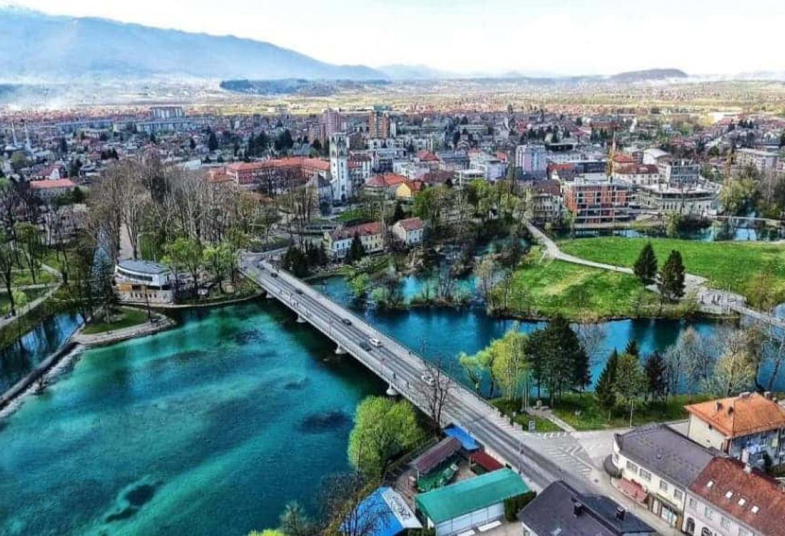
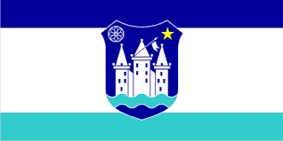
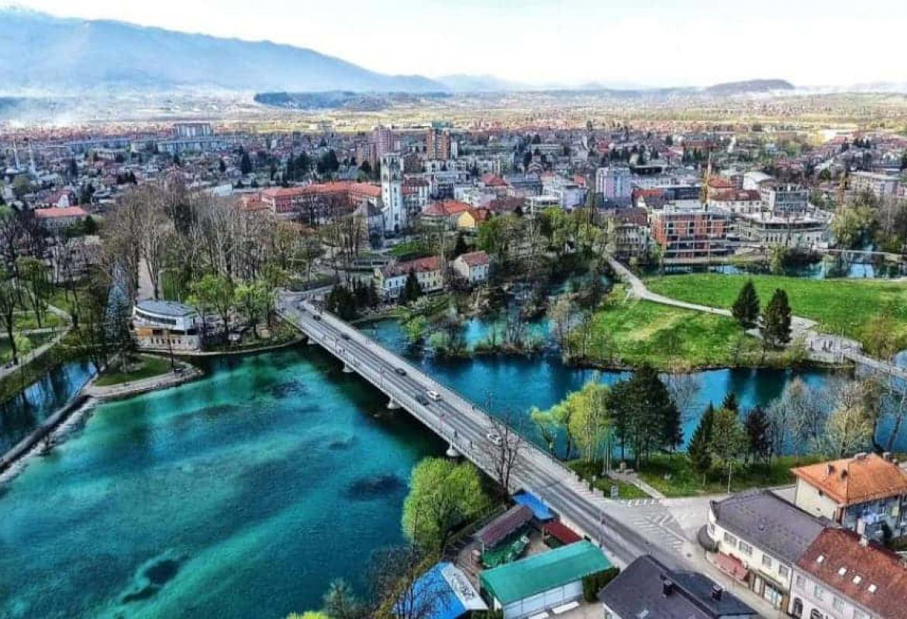
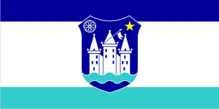
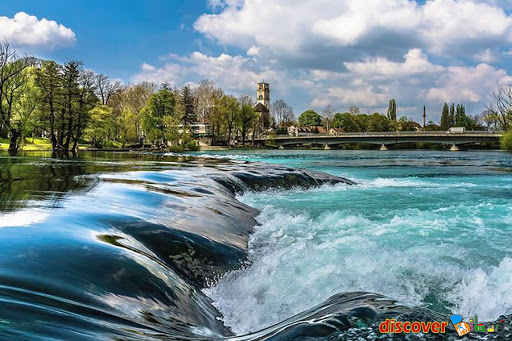
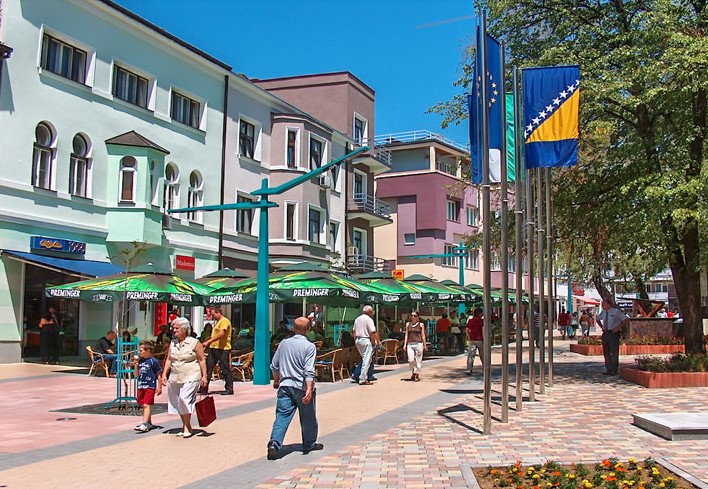
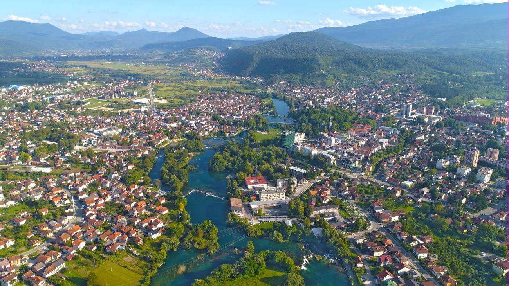

Pogledaj:
Pocetna Grad Bihac Grad Cazin Opcina Kljuc Opcina Buzim Sanski Most Velika Kladusa Bosanska Krupa Bosanski PetrovacZapratite:
Bihać je smješten u sjeverozapadnom dijelu Bosne i Hercegovine i privredno je, administrativno i kulturno središte Unsko-sanske županije.
Na zapadu Bihać graniči sa općinama RH Hrvatske Donji Lapac i Plitvička jezera-Korenica, na sjeveru sa općinom Cazin, na istoku sa općinama Bosanska Krupa i Bosanski Petrovac, a na jugu sa općinom Drvar.
Bihać je smješten u Bihaćkom polju, podno planina Plješevice i Grmeč i brda Debeljača. Kroz njega protječu rijeka Una i njene pritoke Klokot i Privilica.
Reljef se većinom sastoji od polja, brežuljaka i planina srednje visine. Velik dio grada bogat je izvorima, potocima, rijekama i podzemnim vodama. Klima je uglavnom umjereno-kontinentalna i umjereno-planinska, uz male promjene zbog zračnih masa.
 Grb grada Bihaca 
 Zastava grada Bihaca
Grb grada Bihaca 
 Zastava grada Bihaca
Povrsina: 945,45 km2
Broj stanovnistva u 2013. godini je iznosio: 56 261
  